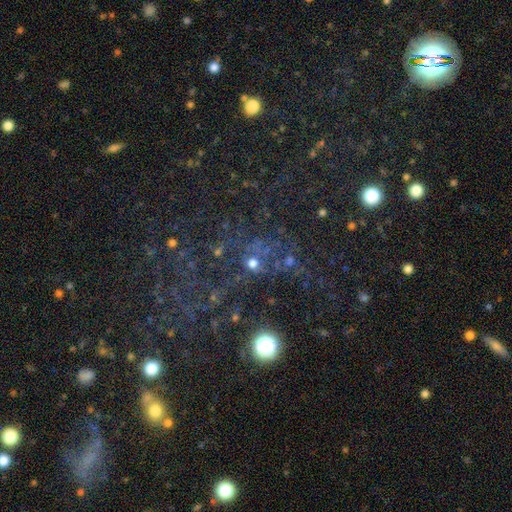

SEAMLESS
SEmi-Automated Machine LEarning Search for Semi-resolved galaxies
A machine-learning search of the DESI Legacy Surveys for faint dwarf galaxies just beyond the Local Group.
Our current knowledge of the faintest galaxies is still dominated by the Milky Way's own satellites. Those galaxies have all lived inside a massive halo, so their gas, star formation, and structure have been shaped by their host. To learn how the smallest galaxies evolve on their own, we need to find them in isolation, and that means looking beyond the Local Group.
Read more
Searching for dwarf galaxies through concentrations of resolved stars work well within about 1–1.5 Mpc, and searches for diffuse, low surface brightness light work well at much larger distances. In between, at roughly 1.5–4 Mpc, a faint dwarf is semi-resolved: its brightest stars appear as a scatter of point-like sources sitting on top of a faint haze of unresolved light. Both classic methods tend to miss or overlook these objects.
SEAMLESS is built for this semi-resolved regime. We run a low surface brightness detection pipeline, adapted from SMUDGes, over the public DR10 imaging of the DESI Legacy Imaging Surveys. A convolutional neural network, retrained specifically to identify semi-resolved objects, then scores each candidate, and the team visually inspects the most promising ones before follow-up with Gemini, Magellan, HST, GBT, VLA, and MeerKAT.
The first discovery was Pavo, one of the lowest-mass star-forming galaxies known, at distance of about 2 Mpc and with no known neighbours. Its proximity and isolation make it an ideal place to study how cosmic reionization and stellar feedback regulate star formation in the smallest galaxies. SEAMLESS has since discovered other isolated, star-forming dwarfs such as Corvus A, and quenched dwarfs such as Hydrus A.